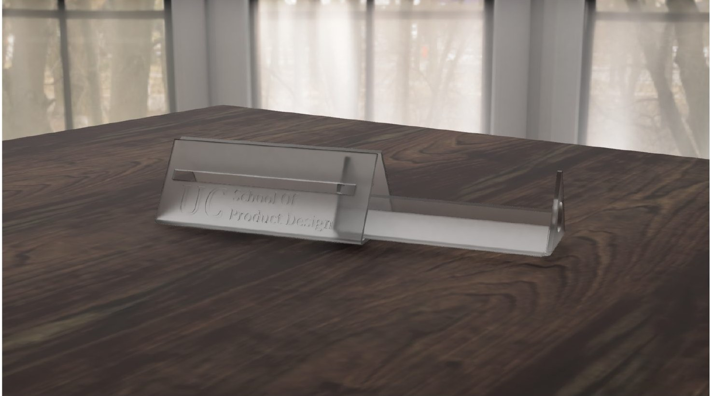
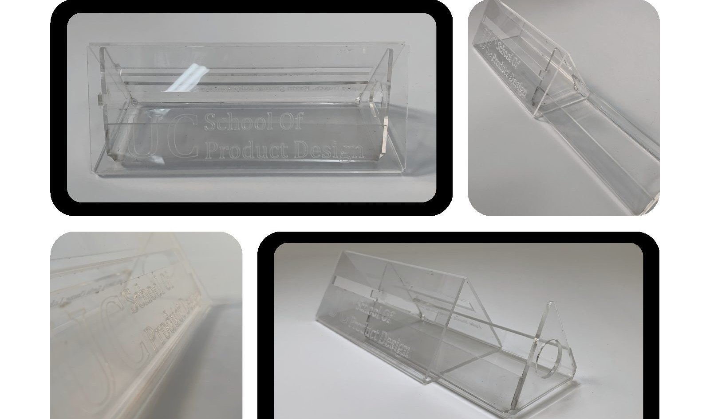

v1
An early Fusion model of the telescopic sleeves.
A telescopic glasses case cut and bent from flat acrylic sheet, with a sliding closure instead of a hinge.

Design a two-part container using only laser cutting and line bending of 3 mm acrylic, getting creative with bends rather than tabs and slots.
We chose a glasses case. Very few are made from acrylic, and glasses accessories are a big market. The challenge: once acrylic is heated and bent it's rigid, so the usual hinges and folding closures were impossible.
Our answer was a telescopic case: an inner sleeve that slides out of an outer one, with a tab running in a slot to guide it and stop it at each end.
Cardboard prototypes proved the telescopic idea and sized it around an average pair of glasses within our limited acrylic. They showed the inner piece needs at least 2 mm clearance to slide.
Covering the whole case used too much material, so we opened up the side, which also lets you see the glasses. Our first slide design used bent tabs, but our tutor pointed out that such a tight bend would be very hard to make and could catch the inner piece during bending. We reworked it into a flat tab that runs in a slot, which fixed both the sliding and the material problem.
Testing in 2 mm acrylic led to two final tweaks: a longer slot so the inner piece doesn't wobble at full extension, and tighter outer bends for a slight friction fit.

An early Fusion model of the telescopic sleeves.
The final inside and outside pieces, with the lengthened slot and engraving.
The two flat 3 mm parts as cut, before line bending to 90° and 120°.
The finished case closes simply without jamming, fits most glasses snugly, and can be re-bent to adjust the size. It's engraved with the UC School of Product Design logo and our names.
Next time we'd add a soft lining to protect the lenses and give it a more premium feel, and move the slide point further down so the logo sits front and centre.
Pages from the group portfolio. Click a page to open it.
I made the inside and outside part drawings.